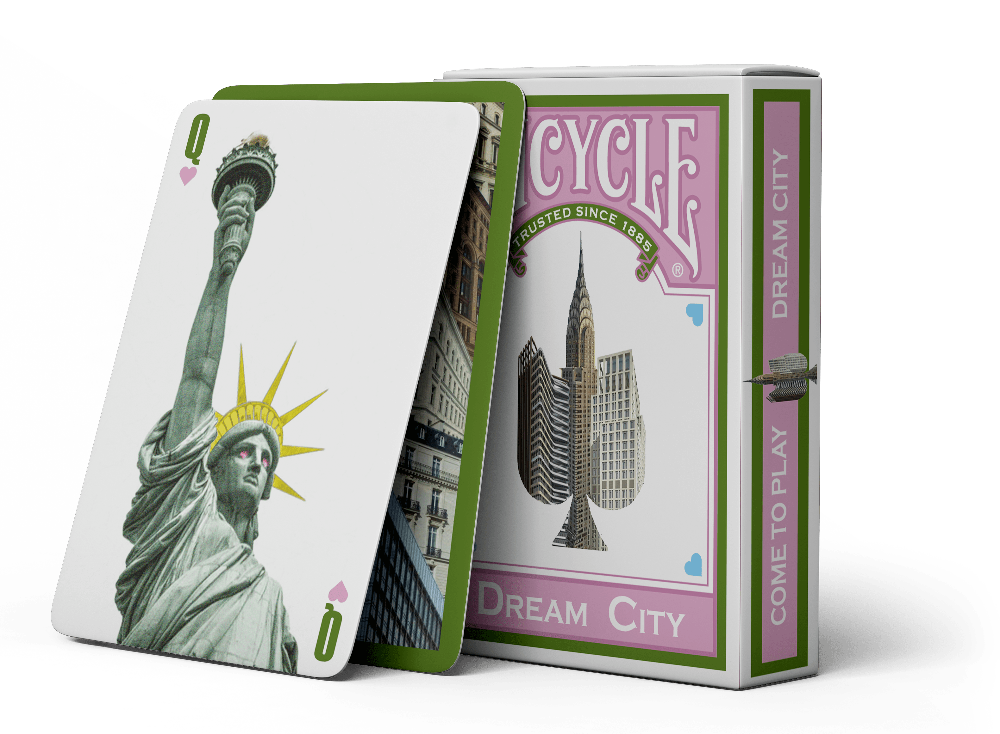
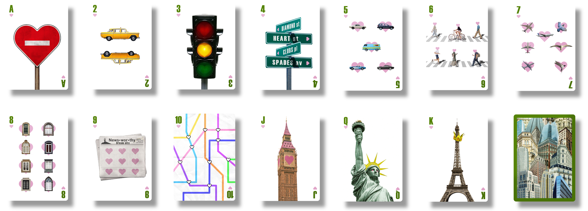

Production
Le projet Dream City a pour but de proposer une ville imaginaire qui s’adapte à chacun. Qu'il s'agisse d'éléments familiers, que l'on croise quotidiennement ou que l'on ignore souvent… Le jeu "Dream City" propose une redécouverte de la ville à travers son effet de collage distinctif.
Direction artistique :
Pour débuter, j'ai commencé par choisir une direction artistique qui me permettrait d'allier les éléments de la ville avec un style graphique unique.
Pour ce faire, j'ai opté pour un style de collage distinctif, qui permet de créer une ville imaginaire en combinant des éléments réels et fictifs. De plus, je me suis imposé la couleur du coeur comme ligne directive.


Packaging :
Il me semblait plus facile de commencer par produire le packaging du jeu de cartes, afin de m'assurer que l'ensemble des éléments graphiques s'accordent avec le format final. Cela m'a permis de définir un véritable univers.
 J'ai eu l'idée d'intégrer une carte de Dream City pour pousser l'immersion dans cette ville imaginaire.
J'ai eu l'idée d'intégrer une carte de Dream City pour pousser l'immersion dans cette ville imaginaire.
Production des cartes :
Ainsi, j'ai produits les 13 cartes de la couleur coeur.
Pour ce faire, j'ai voulu attribuer à chaque carte un élément de la ville, en m'inspirant de ce qui nous entoure. J'ai utilisé des techniques de photo-montage et de collage pour créer des compositions uniques et originales.
Les figures représentent des monuments emblématiques.

Présentation du projet :
Enfin, j'ai réalisé une présentation du projet pour le rendre plus attractif et compréhensible. J'en ai profité pour créer des mockups qui permettent de visualiser le projet dans son ensemble, et de mettre en avant les différents éléments graphiques.